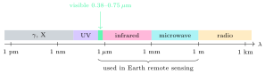

; remote sensing of the Earth uses the visible (0.4–0.7 µm), near and short-wave infrared (reflected sunlight), mid and thermal infrared (emitted heat, 3–14 µm) and microwaves (1 mm–1 m, radar and radiometers), the regions where the atmosphere is transparent.
; remote sensing of the Earth uses the visible (0.4–0.7 µm), near and short-wave infrared (reflected sunlight), mid and thermal infrared (emitted heat, 3–14 µm) and microwaves (1 mm–1 m, radar and radiometers), the regions where the atmosphere is transparent.Definition
, m/s; photon energy . From short to long: gamma rays, X rays, ultraviolet, visible (380–750 nm), infrared, microwaves, radio waves. No source or sensor covers the whole range.
| region | λ (μm) | source | property |
|---|---|---|---|
| visible | 0.4–0.7 | Sun | reflectance |
| NIR | 0.7–1.1 | Sun | reflectance |
| SWIR | 1.1–2.5, 3 windows | Sun | reflectance |
| MWIR | 3–4, 4.5–5 | Sun, Earth | reflectance, temperature |
| TIR | 8–9.5, 10–14 | Earth | temperature, emissivity |
| microwave | 10³–10⁶ | Earth, sensor | temperature, roughness, moisture |
The gaps between the intervals are absorption bands of water vapour and CO : see atmospheric windows.
: see atmospheric windows.
Picture

Logarithmic wavelength axis, one tick per factor 1000: the visible is a thin slice of the range used by remote sensing.
Intuition
Each region answers a different question: colour and vegetation in the reflective bands, temperature in the thermal ones, geometry and moisture in the microwaves.
Pitfall
Bands are named differently by different missions (Landsat "SWIR1", Sentinel-2 "B11"); always reason with the wavelength interval, not the label.